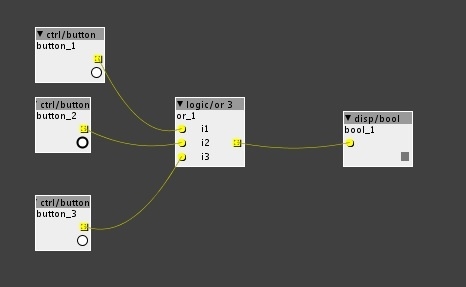

The code editor seems to be a step behind on save. If i add code and save and than open the file with an external editor i only see the previous changes ?! In other words you have to save twice to see the changes.
How to code Axoloti objects
anon5189335
#17
Well. I prefer to use an external editor, like textwrangler for editing objects. Maybe down the road when the editor is more capable I will use it for editing. Uou cannot save the object from Axo editor to new file...... you have to go external anyway, so might as well do it in external editor. But the idea is awesome and when implemented in a nice fashion I will use it 
anon5189335
#18
Do you remember to reload object list? Or maybe that is not necessary when you edit in the Axoloti object editor.
loopmasta
#19
I would love to use a external editor but axoloti complains about a wrong sha or uuid if i edit my code with atom (textedit, Xcode, etc...) and than hit reload.
anon5189335
#20
But it still works if you just change a few letters. An example:
The uuid of ctrl/i:
a3786816db6ea5bc6ac4193a5cccdb2c83b83496
And I change it to:
a3786816db6ae5bc6ac4193a5cccdb2c83b83496
( only changed letter 12 and 13. Switched the A & E around Couldnt highlight it for some reason).
And I do the same with the sha....
It has worked everytime. It might come up as red in the Axoloti talkback window.. But it DOES work.... The problem is if you dont change the uuid and the sha axoloti thinks it is refering to the already exisiting object. THat also means everytime you try to reload a patch with the new verison in it will load the old version instead.. So change uuid, sha and also name and it will work
Don't use Textedit.. I tried that and it does not work for editing axo objects for some reason.. use Textwrangler. It is free and works very well 
johannes
#22
solved on git
loopmasta is commenting on the version in git, this has a better text editor with syntax highlighting etc integrated.
Down the road, custom layouts (position of inlets, outlets, controls etc) will be added, and then you do not want to guess the coordinates to do the layout. I mean, I am not against external editors, but there are good reasons to develop the internal editor further.
anon5189335
#23
sure 100% for internal editing. But as long as we have the option to edit in external way, it is fine with me. I can live with that
loopmasta
#24
I agree. Since i discovered the build-in editor - the xml / c-code mix makes much more sense. And the sha key get updated on every save witch is very convenient and ... . Its just not so easy to let go of my beloved xcode editor.
loopmasta
#26
Some more questions about coding a axo.
- What kind of inlets do we have?
- What is there value range?
- What is a bool32?
- How often is a bool32.rising inlet called? 3kHz?
- Does the BUFSIZE change or is it fixed?
- Can i use control-rate and sample-rate code at the same time and access the same local data?
- Why is a bool32.rising inlet displayed as int32_t in the code-editor?
- Is it possible to debug my code?
<inlets>
<bool32.rising name="t" description="trigger"/>
</inlets>
Custom Object Baby Steps
johannes
#28
Yellow = boolean at k-rate
Blue = fractional at k-rate
Green = integer at k-rate
Red = fractional at s-rate
The rising/positive/bipolar are only annotations to the inlet/outlets, and do not enforce anything.
fractional : -0x08000000 to 0x07FFFFFF corresponds to -64.0 .. 64.0
k-rate, yes
It's currently fixed in axoloti_defines.h at 16 samples.
Using different buffersizes is future work.
yes. Sample-rate code is just wrapped in a loop after control-rate code.
Where in the code editor?
For firmware development I use an STLink-V2 (hardware). Then you can use OpenOCD/GDB eventually integrated in Eclipse...
For "functional debugging", you can usevoid LogTextMessage(const char* format, ...);
but printing text at k-rate or s-rate will trip the watchdog and cause a processor reset.
Often I add outlets during development and watch data with disp/hex or scope....
loopmasta
#29
Yes. And it is a great start. But after reading it i had more questions on my mind.
Some concepts are hard to understand coming from a straight c / objective-c dsp world.
For example. If i define a inlet as bool32 and process its value at k-rate how is the bool32 value computed? Is there a main loop which averages & evaluates 16 samples and returns a 0 || 1 and than calls my k-rate code?
loopmasta
#30
s-rate?
Ok. I thought 'rising' would imply some sort of a simple transient check
Cool. That's what i need.
object-editor -> inlets -> type
Didn't think of that. Simple but elegant.
anon5189335
#31
Sorry I wish I could help you.I have no coding experience at all and I am not that techical. Except for the few new versions of objects i made for Axoloti by copy paste But would really like to learn more about it.
johannes
#32
sorry, yes, s-rate
future work, transient checking is currently a responsibility of the object.
booleans are indeed exposed to the object code with int32_t type.
loopmasta
#33
Some questions about the axo files.
Why can't params have a description like outlets?
<params>
<int32 name="slice" description="slice me up">
<MinValue i="1"/>
<MaxValue i="8"/>
</int32>
</params>I get compiler errors if i try to uses it
chaosmoon
#35
i just managed to duplicate/alter an object (or 2) with Xcode under osx and get it to pass the startup by manually changing the UUID and SHA values. The Axoloti software then tells you what the correct SHA etc. should be. By editing them 1 by 1 i got it to pass
no more red lines and my first object: "or 3"

or 3.axo (826 Bytes)